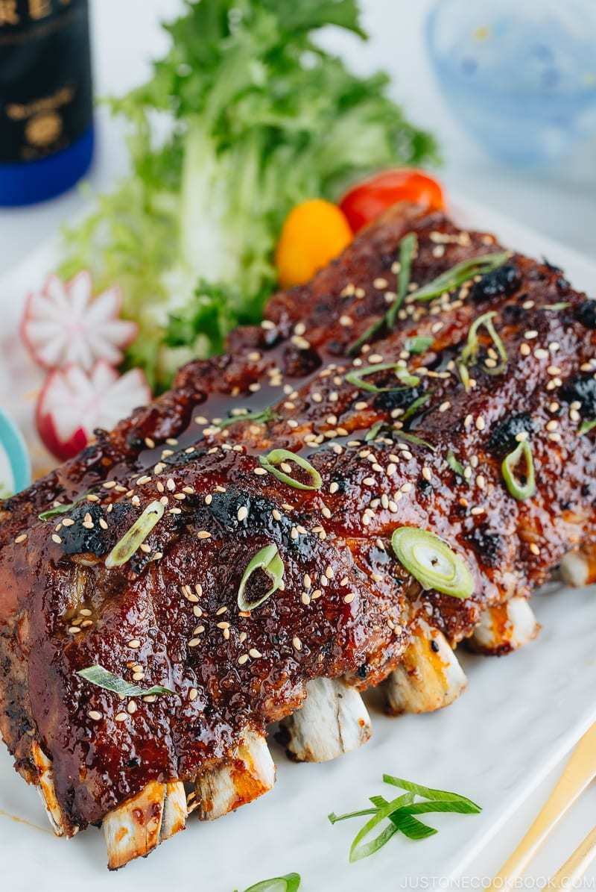

ASIAN STICKY SPARERIBS

Asian Sticky Spareribs
Sexy asian spareribs that you can cook in under 90 minutes with the instant pot!
Ingredients
- 3.5lb pork baby back ribs
- 1 cup of water
- 1/4 cup apple cider vinegar
For the dry rub:
- 2tsp salt
- 1tsp pepper
- 2tsp togarashi
For the sauce:
- 1/4cup sake
- 1/4cup mirini
- 1/2 cup soy sauce
- 1tbsp rice vinegar
- 4tbsp brown sugar
- 3tbsp honey
- 1 clove garlic
- 1 knob ginger
Steps
- in a small bowl mix together the dry rib ingredients
- remove membrane from back of ribs
- season ribs with dry rub
- set aside ribs for 30 min
- in small saucepan combine the sauce ingredients
- simmer on low heat for 30 min
- put ribs on top of the rack
- add 1 cup of water and 1/4cup apple cider vinegar
- select manual setting, high pressure for 25-30min
- natural release for 5 minutes, then quick release
- next we broil: put ribs in oven and brush with sauce and broil for about 3-4 min